GM:雅
メインログ / 雑談ログ
Character Sheet
| PC1 | ： | “ホワイト・ライン” | 暗夜 走一 | (キャラシート) | PL | ： | タンゴ | ||
| PC2 | ： | “伝令使の杖” | 白波 響 | (キャラシート) | PL | ： | LISP | ||
| PC3 | ： | “どっちつかず” | アムピ | (キャラシート) | PL | ： | がぶらす | ||
| PC4 | ： | “ヴァルプルギス” | 五月女 詠 | (キャラシート) | PL | ： | めい |
Index
◆Pre play◆HO&PC紹介
◆Opening Phase◆
01 見知らぬ知人
02 叩き上げ屋
03 藪から見た景色
第2回目開始ポイント
Pre play
HO&PC紹介
GM : ではでは、PC1のソウイチくんから自己紹介をお願いしよう！
暗夜 ソウイチ : うっす！
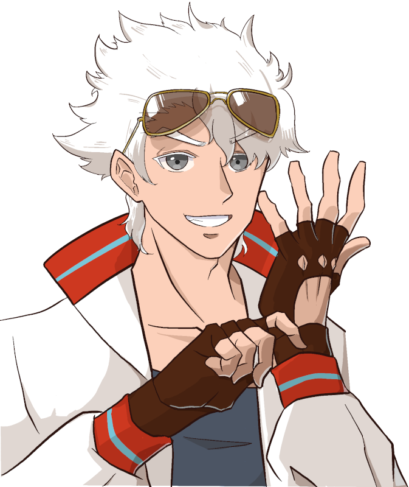
暗夜 ソウイチ : 暗夜走一、26歳！
暗夜 ソウイチ :
(元)レースドライバーにして、清廉潔白かつ公明正大な熱血漢のヒーロー。
自分の派手な活躍よりも、市民の安寧を良しとする男。
親会社の業績不振によるレースチームの解散と自身の人気低迷が重なり、プロヒーローを解雇されてしまった。
現在は活動費を自分の貯金から捻出し、生活費は日々のアルバイトで賄っている。
ブラコンの噂がある。
暗夜 ソウイチ :
ピュアサラマンダーシンドローム。
心臓を白く燃え上がらせ、莫大なエネルギーを生み出すことができる。
ただし、ソウイチは生み出したエネルギーをコントロールできない。
エネルギーを使って動く装備品を使用することで戦闘を行う。
武器は白炎が噴き出す槍、"チェッカーフラッグ"。
暗夜 ソウイチ : 以上！
GM : ありがとう！ ストレートでかっこいいお兄ちゃんだけど、ストレートすぎるが故に……ってヤツだ
GM : そんなソウイチくんのHOはこのお方
◆PC1用ハンドアウト◆
ロイス："マーティア" ライオネル・トラボルト
アナタは落ちこぼれヒーローだ。
パッとしない、運がない、シンプルに弱い……ともかく理由はなんでもいい。
お情けからか、そんなアナタにUGNは廃棄されたFHセルにあるとされる遺物の回収を命じる。
至極単純な任務の帰り。空を裂くような轟音の轟く暗雲の元で、アナタはヒーローを名乗る男と邂逅を果たすのであった。
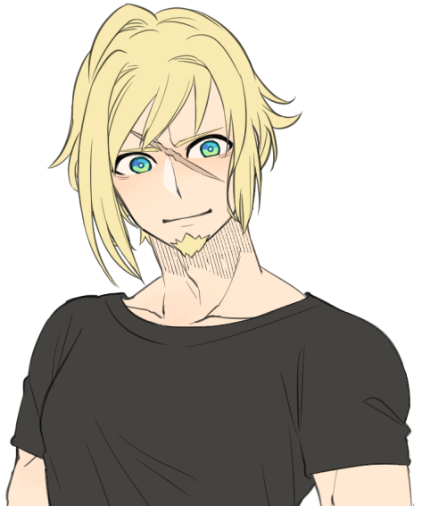
ライオネル : 「師匠！ オレとまた戦ってくれ！」
GM : 誰なんだコイツは、ってことで弟子を名乗る不審者です
暗夜 ソウイチ :
なんか知らんがいいぜッ！！！！
でもコイツの弟子になってもヒーローとして就職できるか怪しいぞ
GM : そこら辺は追々、ね……（？）
GM : ではPC2へ！ 白波響さん、いけるか！
白波 響 : はーい
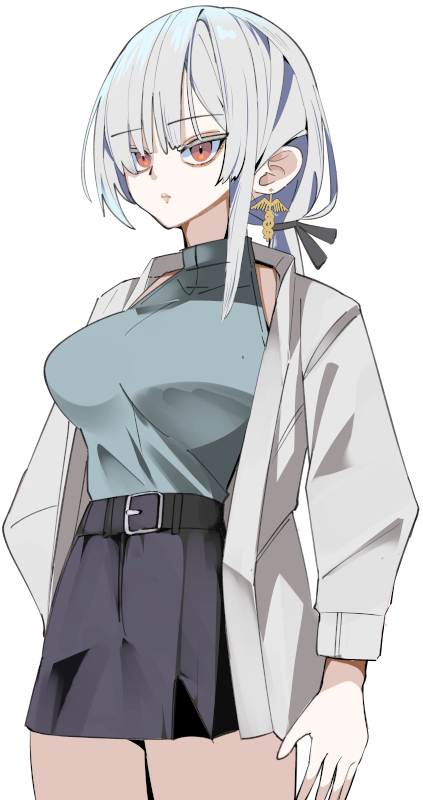
白波 響 : 白波響、24歳でふたりめの大人枠だ
白波 響 : もともと支援専門のヒーローだったけど、相棒を亡くしてから戦う力を求めて遺産「欲望の姫君」に手を出し、新たな力を得たものの、代償としてあらゆるソシャゲをコンプすることを強いられている哀しき課金モンスター！
白波 響 : 攻撃力はあんまりないけど、常勝の天才でたぶんお釣りがくるはず
白波 響 : デイリーに追われてヒーロー活動どころではないらしいのでなんとか社会復帰したい。よろしく頼む！
GM : 過去も現在も、色んな意味でツラい……！
GM : と、いうワケで。社会復帰を手伝ってくれるHOの方はこちら
◆PC2用ハンドアウト◆
ロイス："ノックアップ" 西堂和孝
アナタも落ちこぼれヒーローだ。
活動が地味。素行不良。ウケが悪い……ともかく理由はお任せする。
そんなアナタ宛に『ネレウス計画』なるプロジェクトへの招待が送られる。
どうやらオーヴァードの基礎能力を向上させるUGN主導のプログラムにアナタは選ばれたようだ。
計画当日。アナタを出迎えた"リヴァイアサン"霧谷雄吾は隣の男を教官として紹介するのだった。
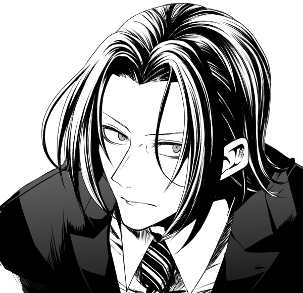
西堂和孝 : 「人気が出ないのも道理だな。叩きあげる甲斐があると云うものだ」
GM : 教官のおじです。よろしくおねがいします。
白波 響 : 私の運営する攻略まとめサイトは大人気だぞ。よろしくよろしく！
GM : ネットの名声がデカい！ ほな次へ！
GM : PC3、アムピ！
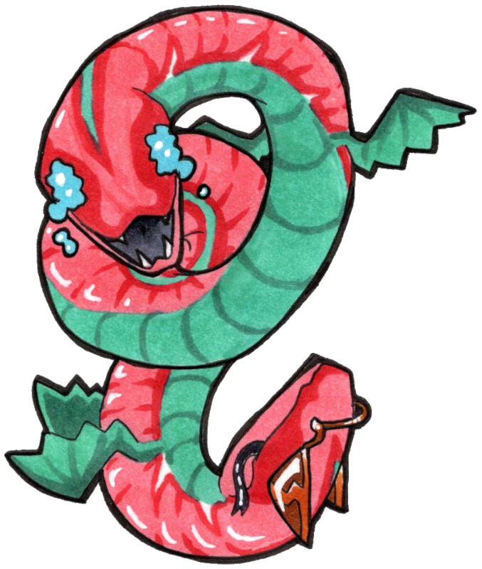
アムピ : はーい、生まれて12年のアムピです！
アムピ : カオスガーデンで何者かに創造されてはるばる日本へ来ましたが、他のＡオーヴァード達がヒーローとかで身を立てていく波に乗れず大幅に出遅れました
アムピ : それもこれも双頭の蛇(どちらにも進む)性質のせいです。温厚だけど非常に優柔不断な性格をしています。
アムピ : 酷い時にはヴィランに同情して回復したり、話がよくわからなくなってその場からいなくなったりします。二つ名である"どっち忠かず"は他者からつけられた蔑称で、活動名義はそのままアムピです
アムピ :
能力はキュマイラ/ソラリス！
持前の毒とか装甲低下とかを付与して殴るよ、奇跡の雫で一発だけ蘇生もあるよ
アムピ : そして腐っても幻獣、クライマックスはルーラーで有利に立ち回ろう！
アムピ : 人間態の立ち絵はじきに生えます、よろしくお願いします！
GM : ﾆｮﾛﾆｮﾛ…これからどうなっていくか注目蛇にょろねぇ…
GM : そしてそんなあむぴっぴのHOはこちら！
◆PC3用ハンドアウト◆
ロイス：謎の男女コンビ
アナタすら落ちこぼれヒーローだ。
脛に傷のある。参入したばかり。クセが強い……ともかく理由があるようだ。
空を震わせる轟音の正体を探るべく現場に急行するアナタは、裏路地で苦悶する女と、それを介抱する男の二人組と出逢うのだった。
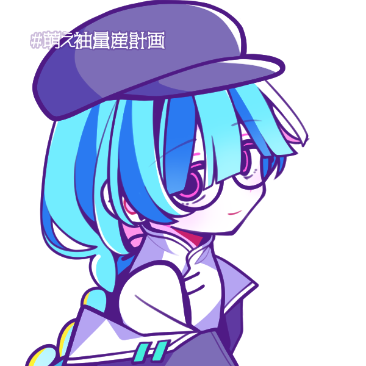
女 : 「苦悶する女でぇす」
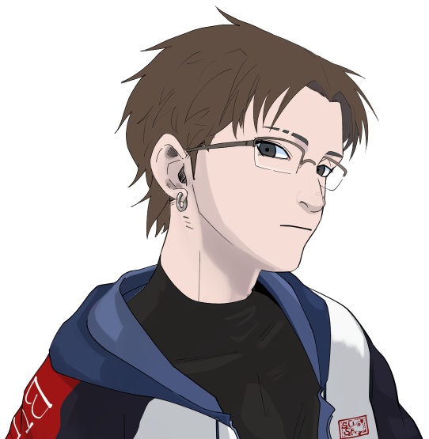
男 : 「介抱する男っす」
GM : 日本人ではないみたいですねぇ（雑すぎる紹介）
GM : まぁ、おそらく……良い感じに絡める……といいな！
GM :
てことで、最後のPCへ！
GM : 深淵より召されよ！ 五月女 詠ちゃん！
五月女 詠 : はーい！ 今回は空気を読まずに台詞形式でいきます
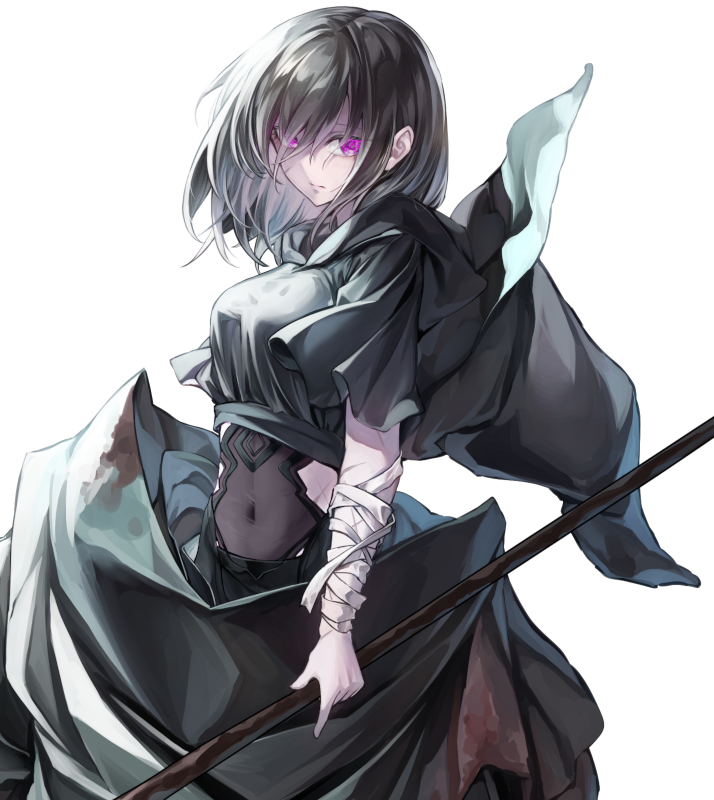
五月女 詠 : 「わたしの名は“ヴァルプルギス”────深き闇の眷属にして、災厄を呼ぶ魔女だよ」
五月女 詠 : 「この世に受肉してからの歳月は十六年。降臨日は五月一日……」
五月女 詠 : 「わたしは世界を守護せし秩序の砦……その幼き盾の一人として育てられたの」
五月女 詠 : 「そして、詠唱によって風と雷の魔術を操る魔女として、わたしは光差す表層の世界へと舞い上がった」
五月女 詠 : 「だけど、わたしはあなたたちがヒーロー……なんて呼ぶような存在じゃない……」
五月女 詠 : 「何故ならわたしは、呪われた血と魔力を受け継いでいるから」
五月女 詠 : 「かの戦乱の時代に現われし深淵の亡者……ゴスペルと呼ばれた異端者の、ね」
五月女 詠 : 「大いなる陰謀により、わたしの正体はもう白日の下に曝されている……。無垢なる仔羊たちは、わたしを光の使者とは決して認めない」
五月女 詠 : 「でも、その認識で正しい……。だってわたしは最初から、人々を救う気なんてないの」
五月女 詠 : 「むしろ、その逆。深淵の魔女であるわたしは、この世界を滅ぼす運命にある……」
五月女 詠 : 「わたしにかけられた忌まわしき封印が完全に解ける刻、世界は闇に呑まれるでしょう」
五月女 詠 : 「この封印は、わたしが欲望の咎人たちを狩り、その血を浴びる度に解けていく……約束の日は近い……」
五月女 詠 : 「表層の世界を彷徨う哀れな仔羊たち。恐れ、慄き、震えて待ちなさい……」
五月女 詠 : 「わたしに深淵に導かれる、その刻を────」
五月女 詠 : 終演です（以上です）。
GM : 非常に濃い暗黒面の気配を感じるガール……。過去がとても重い。
GM : 深淵へと導かれる詠ちゃんのHOはこちら！
◆PC4用ハンドアウト◆
ロイス："ネーム・オブ・ローズ" ローザ・バスカヴィル
なんと、アナタは落ちこぼれヒーローだ。
もう理由はお任せしたい。
落ちこぼれではあるが、奇妙な縁もありUGN日本副支部長のローザ・バスカヴィルとコネクションがある。
『ネレウス計画』なるプロジェクトを訝しむローザは、その調査を依頼するのであった。
ローザ : 「どうぞ、よろしくお願いします」
五月女 詠 : 知ってるけどあんまり知らない女の…依頼！！
GM : 霧ちゃんの出番が多すぎて影に隠れ気味な副支部長、登場！
五月女 詠 : 大体霧ちゃんが便利すぎるのが悪い
GM : 霧ちゃんを監視する人をどうすればいいのか、扱いづらい側面もある…
GM : ではでは、以上のPCとNPCたちで始めていきますよ！
暗夜 ソウイチ : よろしくお願いします！
アムピ : ウオーー！どいつもこいつも濃いぜ！よろしくお願いします！
五月女 詠 : よろしくお願いします！
GM : そして登場侵蝕ボタンと加算ボタンがついてるので、是非ご活用を……
五月女 詠 : ありがたい！
アムピ : 便利なのよこれ～(おば)
GM : 素材を提供してくれたぴっぴに感謝！
GM : ここふぉりあのおばもいます
GM : では「Hero & AchieVers」始めていきます！
Main play
Scene 01 見知らぬ知人
GM : 登場PCはソウイチくん！
暗夜 ソウイチ : 33+1d10 (33+1D10) ＞ 33+4[4] ＞ 37
GM : おっけぇ、ソウイチくんは移動手段ってビークルかな？
暗夜 ソウイチ : ヒーロー活動用のビークルは会社に返したぜ！
暗夜 ソウイチ : 自前のクルマは持ってる設定だけど、ソウイチは普通車を攻撃に使ったりはしないぜ！
暗夜 ソウイチ : データ上はできるけどな！
暗夜 ソウイチ : そういうわけで徒歩がメインです
GM : 世知辛い理由もある！ それじゃあ現場までトボトボ来た設定でいこう。
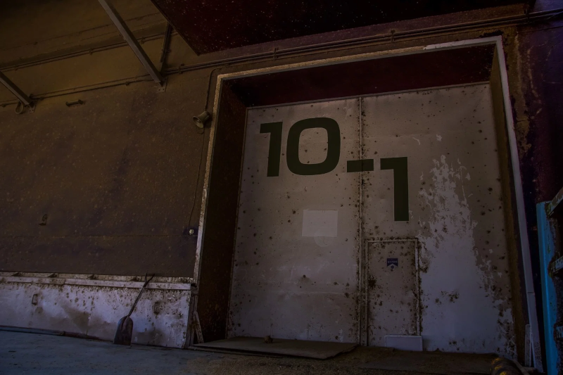
GM : ……アナタはUGNからの依頼で、放棄されたハズのFHセルとして利用されていた施設に辿り着いた。
GM : 依頼の内容はセル内部に破棄されたとされる、大量の電力を保有するバッテリーの回収である。
GM : 不具合のせいか、不定期に電力サージを引き起こし近隣に軽くはない被害が出始めている。トップヒーローを呼ぶまでもないと判断したのか、ちょうど暇のあるアナタに依頼した……というワケらしい。
GM : そんなこんなで、アナタは僅かな対侵入者用トラップを掻い潜りながら奥へと進むのであった。
暗夜 ソウイチ :
「ふむふむ……回収物はバッテリーか！」
「緊急性こそ低いが、危険物だな！！」
暗夜 ソウイチ :
「事故を起こし、被害が出る前に回収！」
「うむ、大事な仕事だッ！！」
暗夜 ソウイチ : 地味で単純な仕事ではあるが、ソウイチは意義を見出だせる仕事だと、十分な熱意を持って施設を進む。
GM : ……堂々と施設の中を進む。道中、タレットなど対人トラップがアナタを出迎えるも大した脅威にはならなかった。
GM : そうして、辿り着いた先には重厚な扉が道を塞ぐ……
GM : ワケでもなく。
GM : 普通に開け閉め可能な防火扉を隔てた研究室に、火花を放つ捨て置かれた物体があった。
GM :
目視する限り、サイズは一般的なスマホ程度。
しかし迸るエネルギーがソレをバッテリーだと気づかせてくれるだろう。
暗夜 ソウイチ : 「発見！ 予定外も悪くないが、順調なのは良いことだ！」
暗夜 ソウイチ :
グローブとニッパーを取り出して、バッテリーを少し解体。
持ってきた耐火袋にしまって安全を確保する。
暗夜 ソウイチ : 元レーサーであるソウイチは、簡単な技術職でもあるのだ。
暗夜 ソウイチ :
「ではさっさと帰るとしよう！」
「これならソウジに夕方顔を見せに行く余裕もあるだろう！」
GM : 手慣れた手際でバッテリーを回収したアナタは、これから悠々とした帰路につく……。
GM : ハズだったが、この世界は常に非日常が隣り合う。
GM : ド ォ ン ！ ！
GM : 激しい爆発。あるいは、落雷のような鋭い衝撃。
GM : 施設の中にいても理解できる、外で何かが起きたのだと。
暗夜 ソウイチ :
「！！」
瞬間、ソウイチの体が白い炎に包まれ、臨戦態勢へ。
暗夜 ソウイチ : ドップラー音を伴うほどの速度で、すぐさま音のした地点へ駆け抜ける。
GM : ……白炎の軌跡を残し、外へと飛び出す。
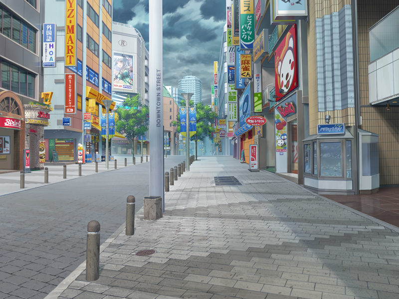
GM :
そこでアナタは信じられないモノを目にする。
どんよりと空を覆う厚い雲、陽の差すはずもない曇天のソラに……。
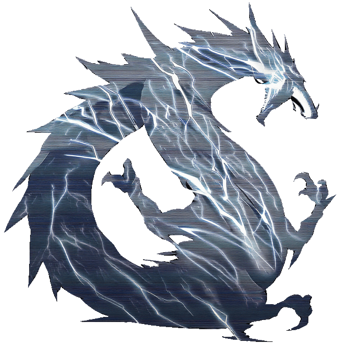
黒龍 : 「────────」
GM : 龍と呼ぶに相応しい、超巨大な化け物が鎮座していたからだ。
暗夜 ソウイチ :
「これは驚いたな！！」
「キミ！！ 話は出来るだろうかッ！？」
アニマルオーヴァードの迷子という可能性もある。ひとまず対話を試みる。
黒龍 : 「────────────」
GM : 話が通じるワケもない。アナタの声量でも届かないほどのサイズなのもあるだろう。大橋を飲み込めそうな程の巨体だ。
GM : だが、街を睥睨していただけだった龍はグラリと天へ頭を掲げると……。
黒龍 : 「████████████████ーーーーーッッッ！！！！！！」
黒龍 : 鼓膜を突き破るほどの大咆哮を発し、おおよそ数十発もの落雷を街へと呼び落とす！
黒龍 : そして、その内の一撃が音を越えてアナタへと迫る────
GM : 10D10+5 (10D10+5) ＞ 68[8,5,3,10,9,4,9,8,8,4]+5 ＞ 73
GM : では、リアクションを取る場合は73を超えてみて頂いて…
暗夜 ソウイチ : えっdx間違えたとかではなく！？
暗夜 ソウイチ : 流石に無理無理！！
GM : ではないです！ まぁ仕方ないけど、大丈夫！
暗夜 ソウイチ :
雷に向かって白炎と共に槍を突き出すが……
圧倒的なエネルギー差の前に炎の保護膜は一瞬でかき消されてしまう。
暗夜 ソウイチ : 「ぐ、おおおおおおッ！！！！」
GM : まさに絶対絶命。壮絶なエネルギーの衝撃がアナタを焼き尽くさんと迫る────。
GM : まさにその時だった。
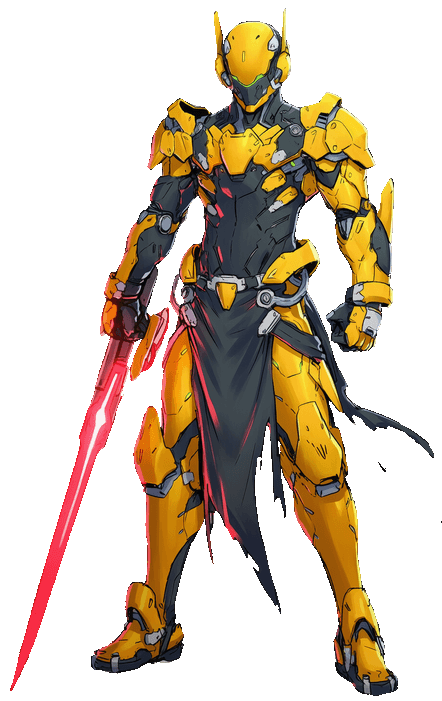
？？？ : 「間に合ったァ！！」
？？？ : 「ズオリャア！！」
GM : 雷撃を裂いて現れ、装甲をその身を纏う戦士が……アナタの前に現れたのだ。
？？？ : 「よぉ師匠。こっちでは生きてるみたいだな！」
GM : やけに馴れ馴れしく話しかけてくるこの人物に、アナタはもちろん見覚えはない。
暗夜 ソウイチ : 「おかげさまで生きているぜッ！！ ありがとうッ！！！！」
暗夜 ソウイチ : 「──ところでキミは誰だろうかッ！！ たぶんオレはキミの師匠では無いと思うがッ！！」
？？？ : 「死にかけたってのに相変わらずだ！ そうだな、オレは……」
？？？ : 「ライオネル、そう呼んでくれ」
暗夜 ソウイチ :
「了解だ！！ よろしく、ライオネルクン！」
空いた手でサムズアップする
ライオネル : 「おうよ！ んでだ、師匠……」いつの間にやら武装が解除され、生身の状態だ。
ライオネル : 「オレ、もうガス欠なんだよ……」 先ほどの頼もしさとは打って変わって、やや情けない声色
暗夜 ソウイチ :
「何ィッ！？」
「それなら仕方ないな！！」
「後はオレが引き受けようッ！！」
暗夜 ソウイチ : 「キミには支援と連絡を頼む！！」
暗夜 ソウイチ :
「被害を食い止める時間稼ぎくらいはオレ1人でも出来るさ！」
先ほどの雷を見てもなお、槍を龍に向けて掲げる。
ライオネル : 「…………」さっきの威力を体感したのにマジかという顔
ライオネル : 「いや、それでこそ師匠だな！ 頼もしいぜ！」
ライオネル : 「けど、一人じゃムチャだからな……ムチャどころの話じゃない」
ライオネル : 「……師匠、なんかエネルギーを補給できるものはないか？」周りをキョロキョロと
暗夜 ソウイチ :
「エネルギー形態にもよるが！」
「選択肢は2つ！」
暗夜 ソウイチ :
「オレから熱エネルギーを吸い上げるか！」
「後方に捨て置いた袋の中の特殊バッテリーから、電気エネルギーを充電するかだな！」
ライオネル : 「めっちゃ悩ましいが、バッテリーならありがたい！」 ライオネルの腕に巻かれた端末を指さして
ライオネル : 「んでだ、師匠。ヤツに一発ぶち込むことってできるか？」手慣れた手付きで、バッテリーと端末を繋いでいく
暗夜 ソウイチ :
「出来る、いや、やるさッ！！」
「ゴールまで走り抜けるのはお手の物だからな！」
ライオネル : 「マジでありがてぇ！ ヤツにバカ熱い一撃を食らわせてやってくれ！」 俺があとに続く、とライオネルは続ける。端末には急速にエネルギーがチャージされているのか火花が散っていた。
暗夜 ソウイチ :
「OKAY！」
「テールトゥノーズで付いて来い！！」
暗夜 ソウイチ : ソウイチの心臓の白炎が一層輝いて、コンクリートを踏み砕く勢いで空中へ踏み切る。
暗夜 ソウイチ :
突き出した槍はロケットのように加速して、龍に向かい突撃する。
ドン・キホーテの無謀な勇気と共に空を駆ける！！
黒龍 : 「────────！！」
黒龍 : 貫かんと迫りくる炎。それを危機と認識したのか、龍は口を大きく拡げてエネルギーの充填を始める。
黒龍 : 放たれればオーヴァードでさえ一溜りもない熱量の収束。それがソウイチへ向けて撃ち放たんとしていた。
暗夜 ソウイチ :
ソウイチの槍に迷いはない。恐れがない。
次の瞬間に生命が尽きたとしても。
正義に殉じたのだから悔いはないという信念、あるいは狂気。
それらを燃やして、ただ一点に懸ける！！
暗夜 ソウイチ : 「止められるもんなら、止めてみろッ───！！」
黒龍 : アナタを焼き尽くさんとする閃光が迸る。そうして放たれる必滅の一閃は────
ライオネル : 「右から追い抜き失礼！」
GM : 赤刃がマシンのテールランプのように軌跡を描き、龍の頭上へと昇った。
ライオネル : 「コイツは俺と師匠からの、プレゼント……だッ！！」
ライオネル : 打ち下ろした刃は龍の頭蓋を裂くことはなかったが、その大きな衝撃はチャージを中断させるのに十分な威力だった
黒龍 : 「！！？」 顎の中で行き場を失ったエネルギーのダメージに苦悶する
ライオネル : 「師匠、やっちまえ！」
暗夜 ソウイチ : 「ライン確保感謝！！」
暗夜 ソウイチ : 「行くぜ───コイツでフィニッシュだッ！！！！」
暗夜 ソウイチ :
一直線に龍の口蓋目掛けて突撃……
槍が龍の上顎に刺さった瞬間、白炎が炸裂する。
暗夜 ソウイチ :
衝撃に合わせて槍を引き抜き……
勢いのまま回転して、龍の眉間に石突を押し付ける！
白炎と黒煙を巻き上げながら龍の頭に突き刺された槍は、立てられた旗のごとく。
暗夜 ソウイチ : 「どうだ！！ 荒っぽくて悪いが、頭も冷えただろう！？」
黒龍 : 「██████████……！！ ███████████████……」
黒龍 : 地響くような唸り声をあげ、その一撃に龍はよろめく。
ライオネル : 「……！」
黒龍 : そして、その鎌首をアナタから天へと向けると……
黒龍 : 曇天の中へと隠れるように、その姿を晦ませて退散していったのだった。
ライオネル : 「……逃げたか。相変わらず逃げ足の早いこった」滑るようにソウイチへ近づいていく
暗夜 ソウイチ :
「確保出来なかったのは残念だが、街への被害は一旦止めることが出来た！」
「初期対応としては上等だろう！」
ふうっ、と額の汗を拭いながら
ライオネル : 「ああ、そんなに被害は出なかった……と思いたいが……」
GM : 見下ろせば街のあちらこちらから微かに煙が上がってはいるものの、救急隊や他ヒーローの集結により落ち着きを見せ始めているようだ。
暗夜 ソウイチ :
「キミはよくやってくれたさ、ライオネルクン！」
ライオネルの肩を抱き、称賛する。
暗夜 ソウイチ :
「キミの助けがなければ、オレも危うかった！」
「撃退出来たのはキミが駆けつけてくれたからだ！」
ライオネル : 「ふ、ふふ……」あまりの褒め殺しに、仮面の下から笑い慣れていない声が漏れる
ライオネル : 「……ん゙ん。い、いや。これも師匠のお陰だ」一転、気を取り直して
ライオネル : 「この世界でもイイ腕前をしているみたいで一安心だ」
GM : ……ふと、ライオネルの繰り返す「この世界」という言葉にアナタは引っかかりを覚える。
暗夜 ソウイチ :
「発言から察するに、キミは別の世界の来訪者だろうか！」
「噂には聞いていたが、実際に会って話すのは初めてだ！！」
ライオネル : 「うおっ、すっげぇ単刀直入に来たな！ こいつは初めてだ」否定することもなく
暗夜 ソウイチ : 「速いことに損はないからな！ 話もレースも！」
ライオネル : 「ま、そういうことなんだが……改めて自己紹介させてくれ」軽く咳払いをして
ライオネル : 「オレはライオネル。"マーティア"ライオネル・トラボルト」
ライオネル : 「Dx-104-RWからやってきた、平行世界のヒーロー……」
ライオネル : 「そして、アンタの弟子だった男さ」
暗夜 ソウイチ :
「師匠とオレを呼ぶのはそういうことか！」
「では既に知っているかもしれないが、礼儀としてオレも自己紹介させてもらおう！」
暗夜 ソウイチ :
「"ホワイト・ライン"暗夜走一！」
「2か月前までは"ホワイト・ロード"だったんだが、そっちはクビになった！」
「今はフリーのランク外ヒーローさ」
GM : ライオネルは一瞬、「マジか」とおどけたような態度を取る
ライオネル : 「逆に驚きだな。ランク外？ 師匠がか？」やや訝しんで
ライオネル : 「オレん世界じゃあ師匠は……レジェンドの称号を戴いてたんだが」
暗夜 ソウイチ :
「ぶっ、はははははッ！！！！」
「レジェンドとは驚いたぜ！！」
暗夜 ソウイチ : 「確かにトップヒーローだった時はあったが、すぐにランキングには載らなくなったオレがか！」
ライオネル : 「はぁ～、納得いかねぇな！ ここじゃ上にどんなヤツがいるってんだか、もしくは民衆の目が腐ってるかだが……」不服そうにﾎﾟﾘﾎﾟﾘと頭を掻いて
暗夜 ソウイチ :
「ま、オレもランキングに興味が無かったからな！」
「テレビの番組やらネット動画に出演してランキングを上げるより、オレはちょっとしたことでも不幸の予防をしたかったんだ」
暗夜 ソウイチ :
「だからランキング外になったし、スポンサーも降りた！」
「別に誰も恨んじゃいないさ。それぞれが望むようにした結果さ！」
ライオネル : 「…………」思う所があるのか、少しだけ黙りこくって
暗夜 ソウイチ :
「オレの立場はそんなとこだ！」
「ともかく！ よろしくな、ライオネルクン！！」
握手を求める。
ライオネル : 「……ん、ああ。こっちでもヨロシクな師匠」その握手に応じて
ライオネル : 「んで、だ。これから会いに行かなきゃならない人がいるんだが……師匠も来るか？」
ライオネル : 「任務帰りみたいだし」譲ってもらったバッテリーを指して
暗夜 ソウイチ :
「ああ！いいぜッ！」
「それと、さっきのデカいトカゲ……ドラゴンか？ アイツについての話もどこかで聞かせてくれ！」
ライオネル : 「モチロンだ！ ええと、そんなら……」端末の液晶を弄ると、腕上にホログラムで出来たマップが浮かび上がる
ライオネル : 「キリタニさん、キリタニさん……。おっ、ここだな」ある地点が赤い点で示される
ライオネル : 「そんじゃ着いて来てくれ！ 近くの支部まで移動する！」
暗夜 ソウイチ :
「了解！」
クルマに乗ってきてないので、走る為のストレッチを始める
暗夜 ソウイチ : ライオネルに親近感/不信感のPでシナリオロイス決定！
GM : おっけい！ オレら仲良し師弟（初対面）
GM : じゃあ締めの文章でシーン終わり！
GM : 平行世界からの使者を名乗るライオネル。アナタは彼に連れられ、近くの支部へと向かうことになった。これから巻き起こる壮大な事件へと足を踏み入れたことも知らずに……。
GM : シーンエンド
Scene 02 叩き上げ屋
GM : 登場PCは白波響さん！ 登場どうぞ
白波 響 : 39+1d10 (39+1D10) ＞ 39+2[2] ＞ 41
GM : 低燃費っぴ、支部には徒歩できた感じでいいかな
白波 響 : いいよ～
GM : おっけ～、じゃあ霧ちゃんたちと顔を合わせる直前まで描写しよう

GM : 曇天の空の下、アナタはとあるプロジェクトへの招待を受けてUGNの支部へ足を運んでいた。
GM : プロジェクト名"ネレウス計画"。軽く概要を読む限りでは、オーヴァード向けの講習のようなものらしいのだが……。
GM : ともかく、アナタはそのプロジェクトに参加する為に支部へと足を踏み入れたのだが……。
GM :
支部の周りが廃ビルやらに囲まれているせいか、やや雰囲気が暗い。
勤務する職員も生気を失ったように書類やタブレットに向かい合っている不気味な支部だ。
GM : 近隣の治安が芳しくないこともあり、支部のエージェントたちは苦労しているのかもしれない……。そんなことを思いつつ、支部長室の前までやってきたのだった。
白波 響 : 「ごきげんよう」 片手でスマホを操作しながら扉を開いて入室
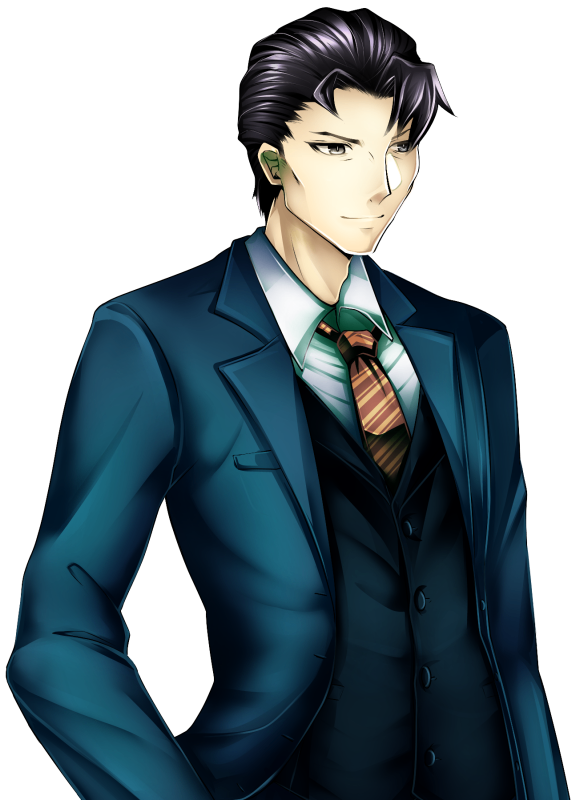
霧谷雄吾 : 「"伝令使の杖"、ですね？ ようこそ、初めまして」
GM : 部屋へ一歩踏み入れば、清廉としつつも真摯な態度を伺わせるUGNの大黒柱。"リヴァイアサン"がアナタの到着を待ちわびていた。
白波 響 : 「その名で呼ばれるのは久しぶりだね。最近は指揮官、マスター、騎空士に先生と副業のほうが忙しかったからヒーロー活動もめっきりご無沙汰だが……」
白波 響 : 「その通り、私が”伝令使の杖”だ。ただの講習かと思えばあなたほどの人物が現れるとは、何事だろうか？」
霧谷雄吾 : 「いえ、計画の責任者ですから。せめてアナタには挨拶しなければと思いましてね」微かに笑みを浮かべるが、疲労のせいか生気が宿っていないように思える
白波 響 : 「なるほど。あまりに活動実績がないからライセンスを試すとか、そういう理由でなくてよかった」
白波 響 : 生気の足りない顔で正面を見て話しながら、手のほうはスマホをポチポチしてデイリークエストを消化している。
霧谷雄吾 : 「ハハ、ライセンスは運転免許証みたいなモノですから。取り消すにしても相応の理由がない限りはありませんよ」スマホに関しては特に気にせず
霧谷雄吾 : 「さっそく本題なのですが、白波さん」改まって
霧谷雄吾 : 「アナタはこの計画に参加する、ということでよろしいですね？ 講習という名目上、それなりの時間と労力も取られることになりますが……」 無論、支障のない範囲でと付け加えて
白波 響 : 「それは私の”遺産”のことを気にしてのことかな。確かに一秒でも時間が惜しいのは確かだが」
白波 響 : 「ずっとこのままというわけにもいかないからね。ちゃんと覚悟を持って参加するつもりだよ」 そう言いながら操作するスマホの画面では、主人公がクエスト報告のために徒歩でフィールドを歩いている。
霧谷雄吾 : 「ヒーローが抱える負担の軽減案も政策に加えたいですからね。利用するようで申し訳なく思いますが、参加してくださることに感謝を」軽く頭を下げて
霧谷雄吾 : 「……ああそうだ。実は講師の方がもういらっしゃっているんです。お会いになっていきますか？」
白波 響 : 「もう？ なかなか仕事熱心だ……。そうだね、挨拶させて貰おう」 答えながらデイリーを終え次のゲームを起動。休む間もなく起きている間ルーティーンのようにこれをずっとこなしている。
霧谷雄吾 : 「それでは……」 講師に連絡しようと携帯に手をかけるが……
西堂和孝 : 「その必要はない」
GM : いつの間にやら、白波の背後に現れた男が霧谷を制した
白波 響 : 「ほう……私の背後を取るとはなかなかやるな」
白波 響 : そう言いながら明後日の方向を見て話している。白波はド近眼だった。
西堂和孝 : 「どの口が言う。どの口が。瓶底のメガネでも買ってこい」
白波 響 : 「眼科……眼科に行っている時間がない……」 あとお金も
西堂和孝 : 「……」唸りを上げて、思わず眉間を抑える
霧谷雄吾 : 「"ノックアップ"、来ていましたか。彼女は……」白波を紹介しようと口を開く
西堂和孝 : 「"伝令使の杖"白波響。だいたいは知ってる」霧谷の言葉に被せて
西堂和孝 : 「……白波。オマエは現状を変えたいとさっき言っていたな」先程の会話を聞いていたのか、アナタに問う
白波 響 : 「よく聞いているな。さすがは講師といったところか」 そういいながら手は変わらずスマホをひたすらに操作している
西堂和孝 : 「ふっ、こんな役職に収まる気はなかったがな……」
西堂和孝 : 「政府の人間に徴用されたという意味では、オマエとお仲間だ」肩を竦めて
西堂和孝 : 「……俺は"ノックアップ"西堂和孝。人呼んで叩き上げ屋だ」
西堂和孝 : 「いっぱしのオーヴァードにしてやるつもりだが、まあ……」
西堂和孝 : 「どうなるかは、お前次第だな」
霧谷雄吾 : 「ぶっきらぼうですが、悪い人ではないのであしからず」横から
西堂和孝 : 「…………」軽くため息をついて
白波 響 : 「む、ため息をつかれるほどか？」
西堂和孝 : 「いいや、コイツが嫌いなだけだ」霧谷を指して
白波 響 : 「何やら訳ありのようだな……」
西堂和孝 : 「政府の人間はあまり好かん。なんせ……」
西堂和孝 : 「……いや、いらんことを言った。今のは気にするな」言葉を濁す
白波 響 : 「き、気になるじゃないか……。そういう意味深な台詞を投げっぱなしにして回収しないままサ終してきたソシャゲを私は何本も見て来たんだぞ……！」
白波 響 : 「ハッ！ ハア……ハア……失礼。つい発作が」
西堂和孝 : 「……俺の好感度が一定まで達したら幕間にでも追加してやる」意外にもそういう話はできるようだ
白波 響 : 「ふむ……そういうことなら、講習を頑張るとしよう」 前向き
西堂和孝 : 「せいぜい気張れ。俺も何とも言えないユニットの使い道を探すのは嫌いではないからな、早々見放すことはないから安心しろ」やや棘のある言い方だが、アナタを買っている気がする
霧谷雄吾 : 「ふむ、少しずつ打ち解けているようですね」蚊帳の外でも気にせず、その様子を見守って
白波 響 : どのゲームも完凸星5ばかりの自分のデータを頭に思い浮かべて少し微妙な気持ちになった。
白波 響 : 「……さて、顔合わせもできたが、用件は以上だろうか？」
霧谷雄吾 : 「ああいえ、今回は他の参加者の方もいらっしゃる予定でして……その方たちとも顔を合わせることになるかと」
白波 響 : 「他のヒーローか……それは楽しみだな」 頭の中でガチャ演出を再生中…
霧谷雄吾 : 「あと3人ほど、ですね。もう少しでいらっしゃるかと……」
白波 響 : 「……10人じゃないのか……」 露骨にテンションダウン
西堂和孝 : 「デイリーで引ける単発だ。ポテンシャルマン（※）しかいないがな」※使いようによっては刺さる場面もある性能を持つキャラのこと
白波 響 : 「よく知ってるな。まあ今の世の中そういうゲームをまったくやったことがない人のほうが珍しいか」
白波 響 : 「（私としても、下手に大物のヒーローが現れるよりやりやすくていいかもしれないな）」
霧谷雄吾 : 「各々が到着するまで、どうか白波さんはくつろいで頂いて……」
白波 響 : 「では失礼して……電源を貰ってもいいかな」 座って分厚いノートパソコンを開く。デスクトップには無数のゲームアイコンが転がっている。
霧谷雄吾 : 「確か窓際の方に……」
GM : そうやって指を窓に向けた、その時。
GM : ────突如として、地を揺るがす轟音が轟き渡る。
黒龍 : 「████████████████────────ッッッ！！！！」
GM : そうして空を裂いて現れたのは闇を深く纏った漆黒の龍。その巨体はまさに空を我が物とするほど圧倒的だった。
白波 響 : 「――ッ！ ドラゴン……！？」
西堂和孝 : 「ふぅん……」 軽く顎を撫でて、興味のなさそうな声色で唸る
白波 響 : 「ヴィランの仕業か……？」 真面目な表情になり窓から外の様子を確認する。いざとなれば出動も辞さない構えだ。
霧谷雄吾 : 「ついに現れましたか。白波さんはそのまま待機で、私たちはこのまま様子を見ます」どうやら訳知りのようで、アナタを制す
白波 響 : 「嫌に落ち着いているな……。わかった、ここは指示に従おう」 座ってゲーム起動。
西堂和孝 : 「それはそれで落ち着きすぎな気もするが……」アナタを横目に
GM : ……街の上空に現れた龍との距離は離れてはいるものの、この支部から全長を目視できるほどの巨体だ。
GM :
そしてその咆哮は身を揺るがし、地を震わせ、鼓膜を劈く。
より近くにいるであろう人間ならば、恐怖も合わさりまとも動くことなど不可能だろう。
GM : ……だが、その恐怖の権化とも言える龍に立ち向かう二つの軌跡があった。
GM :
空中に尾を引く白炎と赤刃。
圧倒的な存在を前に、その二つが巨龍に立ち向かい。それを見事に退けてみせたのだ。
霧谷雄吾 : 「ふむ、看板に偽りなしとはよく言ったものです」その様子を落ち着いた様子で見届けて
白波 響 : 「一体なんだったんだ……」 デイリー消化終了
霧谷雄吾 : 「それも後々説明させてください」
西堂和孝 : 「……白炎。アイツが暗夜の……」西堂は龍をそっちの気に
霧谷雄吾 : 「……暗夜ソウイチさん、でしたか。どうやら彼は見つけられたみたいですね」
霧谷雄吾 : 「恐らく、彼らはこちらにやってくるでしょう。その時に改めて、『ネレウス計画』の……その目的をお話しましょう」
白波 響 : 「……やはりただの講習ではないということか」 パタンとノートパソコンを閉じた。
西堂和孝 : 「変なことに巻き込んじまって、すまねぇがな。まったく……」聞こえるか聞こえないかの声でボソリと
GM : ……黒い龍の出現と共に一変した空気。講習と聞かされていたこのプロジェクトに隠されたものとは一体何なのか……。
GM : 暗く淀んだ空のように、霧谷の思惑は不明瞭に霞んでいくのだった……。
白波 響 : 西堂和孝 P:親近感／N:隔意 で取得しましょう。Pが表で
GM : ソシャゲの会話チョットデキル。おっけおっけ！
Scene 03 藪から見た景色
GM : 登場PCはアムピ！ 登場どうぞ！
アムピ : あいあい
アムピ : 31+1d10 (31+1D10) ＞ 31+10[10] ＞ 41
GM : ｱｰｳ！
アムピ : 多いぜ
GM : ｱﾑﾋﾟｲｼﾞﾒﾇﾝﾃﾞ……（高燃費）
GM : では軽く導入から！ また黒龍に出て貰います
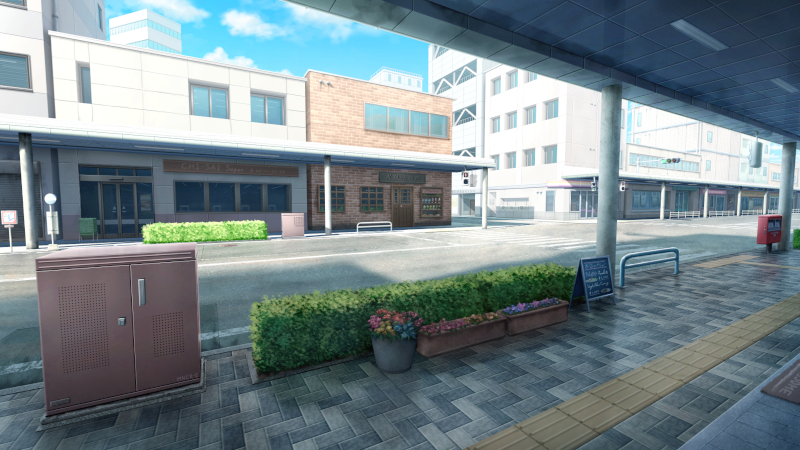
GM : ────時を同じくして。
GM : 街の上空には巨大な黒龍が現れる事態が発生。地を揺らす咆哮と、激しい落雷が一帯に降り注ぐ災害を巻き起こしていた。
GM : 遠目でも把握できるエマージェンシー。近隣のヒーローには緊急通報が一斉に届き、彼らは迅速に移動を始めていた。
GM : アナタもその一人として、暗雲の下へ赴こうとしている……。
アムピ : 「ひぃ、ひぃ、ひぃ……！」
アムピ : 無人の道を征く一匹。人型で走れば早いのか、蛇形態で進めば良いのかすら定まらない。
アムピ : 「これって特攻命令とどう違うんだろぅ……！ボクが行って何かなるの……！？」
アムピ : ぶちぶちと文句を垂れながら歩みを進める……
GM : とぼとぼ、うねうね……。
GM : どれとも当て嵌まらない移動をしていたアナタ。もう少しで現場に到着しそうというその時だった。
GM : ……上空の巨龍は白と赤の軌跡に慄き、天高くへと退いていく光景を目にすることになったのだった。
アムピ : 「……あれぇ……？」 ぼけっと空を見上げて
GM : 呆然とするアナタの目を覚ますように端末に次の命令が届く。内容は近隣住民の安全確保だ。
GM : 龍が発生させた落雷のせいで一部停電や火災が発生しており、その対処を願いたいとのことだ。
アムピ : 「ぅえぇ……どうしよ、うぇと、どこから……近くに人いるかな……？」徘徊を開始
GM :
とはいうモノの、アナタのいる区域はすっかり無人となっている。
避難訓練が徹底されているのか、ゴーストタウンのように人気が無い。
GM : だからだろうか。ソレはやたらと鮮明に聞こえるだろう。
女 : 「うぇっ ぅえっふ……」
GM : ……喉を詰まらせたような、嗚咽の声が。
アムピ : 「ど、あぇ、ｨ人！？」 だばだばと急行する
GM : その所在を確かめようと、アナタは陽も差さない路地を覗いた。
女 : 「うっ、うへぇ……もぅだめ……きゅーしょくだいこー……」
男 : 「想像以上だったな……。何か飲むか？」
GM : その路地には、ぐったりと横たわる女と介抱する男の姿があった。
アムピ :
「あ、だ、大丈夫ですかーー！？」
思ったよりも大音量になってしまった自身の声量に驚きながら近寄る。
アムピ :
「えﾍと、水、水とか飲みます！？元気になれる水持ってるんですけど！」
最悪の誘い文句を発する芋パーカー女性がやってきたぞ
男 : 「ほわっ！？ な、なんっいやアリガト……いやダレ……！？」
男 : ビクリと肩を揺らして浮かび上がり、三本線が刻まれたネックレスを首元に隠す。
女 : 「ハ～ン……うけとっといて～……」変わらずぐったり
ハン : 「でもスゥ……い、いいのかぁ……？」スゥとアムピを交互に見比べて
アムピ : 「あ゜っ！！！！！別にあﾊ、怪しい者ではなくってぇ！クロス、クロスえぇと……あった！ぁの、ヒーロー！ヒーローで！」
ハン : 「わかったわかった！ そっちが落ち着いてくれ！」
ハン : 「じゃ、じゃあ元気になれる水？ をくれるか？ かなり体力を持っていかれちまってな…… 」スゥを見下ろして
スゥ : 「たのみゅ……」
アムピ : 「ぁ、どうぞどうぞ……！」水筒に入った《元気の水》を渡すわ
GM : レネゲイドスポドリ、ありがたい。ではスゥは遠慮なくグビグビ飲んでいきます。
スゥ : 「ぶはっ……！ リ、リザレクト……！」 飲む為に上体を起こしていたが、再び寝そべって
ハン : 「助かったぜ。ええっと、ヒーローさん……名前は……」
アムピ : 「あ、ボク、アムピって言います……っ、ぉ、お二人は……？」
ハン : 「アムピ、か。柔らかい語調でいいな」
ハン : 「僕はハン。そんでこっちが……」
スゥ : 「スゥでぇす。あむぴっぴマヂライフセーバー。本気谢谢」
ハン : 「態度はこんなんだが、スゥなりに感謝はしてる。こんなんだが」
スゥ : 「んだコラ」ハイキックでハンを蹴る
アムピ : 「ハン、さん、スゥ……さん、柔らかい……しぇしぇ、あふ、ﾍﾍ……」
アムピ : 「ど、どいたしまして……」ペコペコとしきりにお辞儀をして
スゥ : 「くるしゅうない～」ヒラヒラ手を振って
ハン : 「こっちがお礼する側だろうが。アムピも畏まらないでくれ」
ハン : 「ところで……近くのUGN支部って知らないか？ そこへ行かなきゃならないんだが……」スマホを取り出して
アムピ : 「ﾍ、えーとぉ……避難ん～……とかは大丈夫なんですか……？あれ、でもUGN行った方が安全なのかな……ん、でももうドラゴンいないから良い……のかなぁ……？」
ハン : 「ん、ああ。アイツな……もう出てこないと願いたいが……」チラリと空を見上げて
スゥ : 「だーじょぶでしょ……」よいしょ、と身を起こして
アムピ : 「えーと……？と、とりあえず……近くの支部なら……ここ、かな？ぁ、こっちの方が近……いや、こっちかな」
アムピ : 「ここ、で大丈夫ですか……？」地図を表示した端末を見せて
ハン : 「どれどれ……」
GM : ハンは自身の端末と、アナタの端末を見比べている。
GM : その時だ。アナタの端末に一通のメールが届く。
ハン : 「おっと、先にそっちを確認してくれ」視線を外して
アムピ :
「あ、ｶｯ、見ちゃ、ぁ、ありがとうございましゅっ！」
目を逸らしてくれたことに感謝しつつ確認！
GM : 送り主はUGNから、そしてメールの内容は
GM : 「ネレウス計画のご案内」と、題されていた。
To Be Continued...